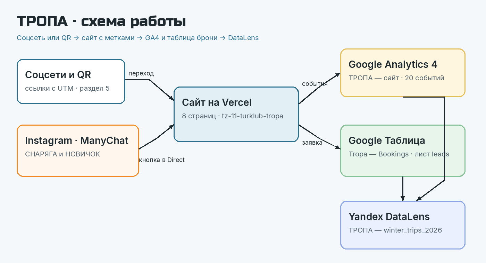
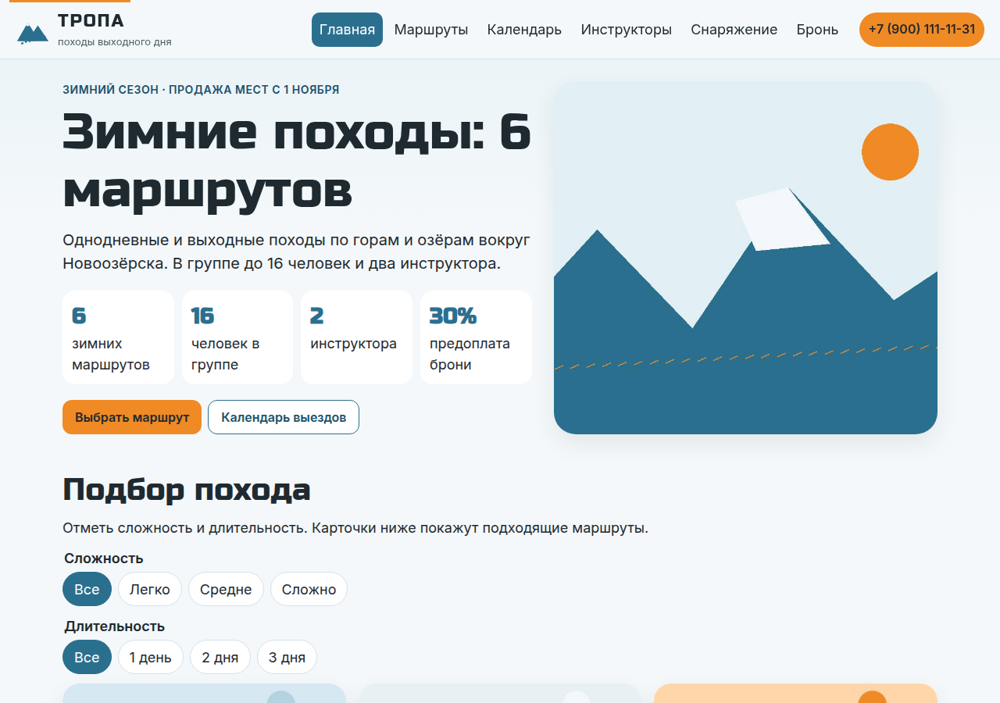

ТРОПА
ТЗ № 11/2026 · Марущак Сергей Григорьевич · группа РПО25/2 · ОП.03
1Бронь жила в переписке Instagram и ВКонтакте. Если инструктор не успевал ответить, место занимал другой, а свободную дату не предлагали.
2
3
8 страниц и 404 · Vercel · статический HTML · календарь, чек-лист и калькулятор аренды
4Ссылка с UTM → форма брони → строка в листе leads → событие generate_lead.
Событие уходит только после ответа приёмника ok: true. Метки не теряются при переходе между страницами: они лежат в sessionStorage.
Живой показ на защите: переход по ссылке U-01, заявка «Приёмка ТЗ-11/2026», строка в таблице.
5Reel «Ночёвка в палатке при −15 °C».
Слово СНАРЯГА открывает чек-лист, ссылка U-02.
Слово НОВИЧОК открывает лёгкие маршруты, ссылка U-03, якорь #easy.
Тексты и кнопки собраны в docs/manychat.md. Аккаунт и Live включает исполнитель.
620 событий. Обязательные уже в коде, два — по выбору: promo_copy и map_open.
Ключевые только три: generate_lead, contact_click, messenger_click.
Ресурс называется «ТРОПА — сайт». Measurement ID — G-3R2JCQ7P84, тег стоит в head каждой страницы.
7page_view → trip_filter → cta_click → form_start → generate_lead.
Открытая считает шаги отдельно. Закрытая требует тот же порядок в одном сеансе, поэтому последний шаг у неё не больше.
Проценты потерь снимаются из Explore после проверок. В слады они не подставлены.
8Три вкладки: Трафик, Заявки, Кампании.
На «Кампаниях» сеансы и generate_lead стоят рядом с заявками и статусом went. Связь только по источнику, кампании и дате.
Руководитель открывает одну ссылку и видит, какой канал приводит брони.
9| Было | Стало |
|---|---|
| заявка в личных сообщениях | одна таблица со статусом |
| источник неизвестен | у брони есть source и campaign |
| мест нет — человек уходит | календарь ведёт на другую дату |
Рекомендация: после первых броней сравнить каналы по статусу prepaid и вести следующий пост туда, где предоплат больше.
10Нейросеть собрала страницы, тексты по ТЗ, события и Apps Script.
Вручную перенесено generate_lead на ответ ok: true и убраны выдуманные километры и биографии инструкторов.
Не сделано из кода: аккаунты GA4, таблицы, соцсетей и DataLens. Их подключает исполнитель, места вставки описаны.
11Сайт: tz-11-turklub-tropa.vercel.app
Репозиторий: github.com/lapindos/tz-11-turklub-tropa
Подключение GA4 и таблицы: docs/podklyuchenie.md
12